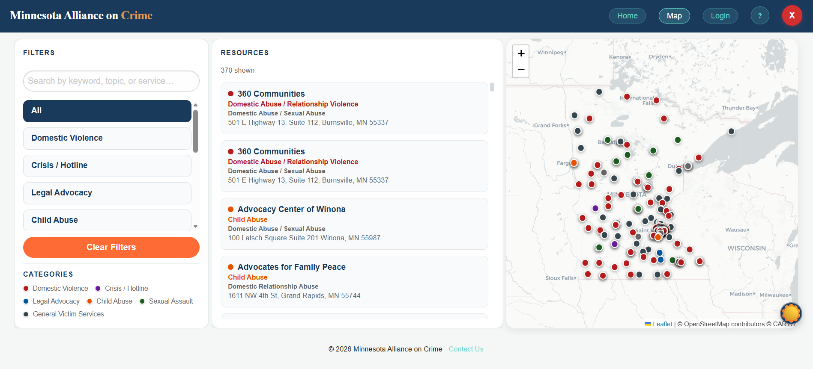
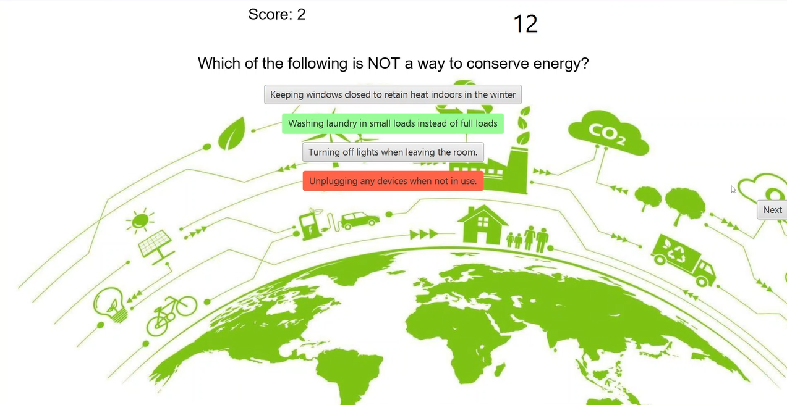
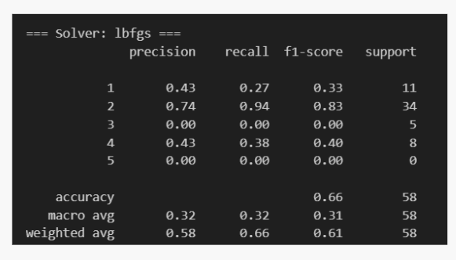
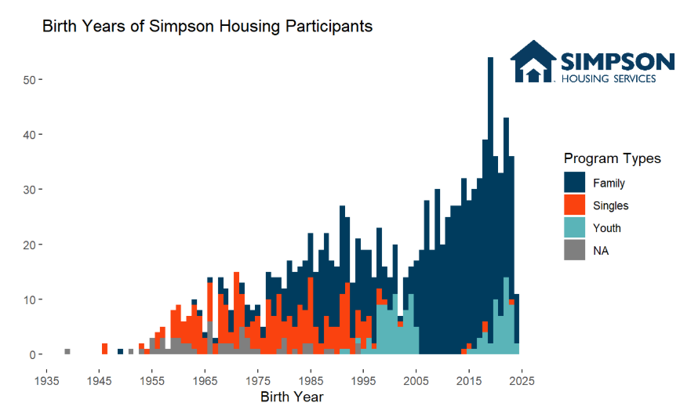

Student Projects
Throughout my time at the University of St. Thomas, I've been able to be a part of many projects.
Minnesota Alliance on Crime Capstone
In May of 2026, I was able to work with the Minnesota Alliance on Crime, to help make them a resource directory. Through this project I was able to gain valuable experience as a leader, as a developer, and as a communicator. In the beggining of our project we lacked the correct cohesivness. We attempted to hold meetings and planning but lacked a proper figure to set plans. I leaned into a leadership role, which allowed us as a group to be able to work more cohesively.


IBM Job Attrition
In May of 2026, using IBM job attrition data, I attempted to find reasons for employees to face attrition. using many different machine learning techniques like Neural Networks, Boosted Trees and Clustering. This project was difficult as we had many variables that we needed to check to see which was best. Me and my partner used different modeling techniques to determine which of our variables were best. This led to us finding the best possible data of a middling dataset.
Game-Based Learning
In December of 2023 I was able to create a trivia game for our schools Sustainability department Later in development we found a lot of issues with our previous code which was hampering development. As a team we decided to refactor our code which allowed us to create a less buggy game that we were proud of. I was put in charge of most of the JavaScript coding and backend development.


Machine Learning Models
In May of 2025, I was able to create a machine learning model meant to find out if there is a link between Air quality and amount of arable farm land within a country, using data from the World Air Quality Index project
Data Visualization
In May of 2025, I was able to work with Simpson Housing Services, a local nonprofit supporting people impacted by homelessness. I created a data Visualization displaying the birth years of every individual and labeling them based off the program that they were a participant in.
